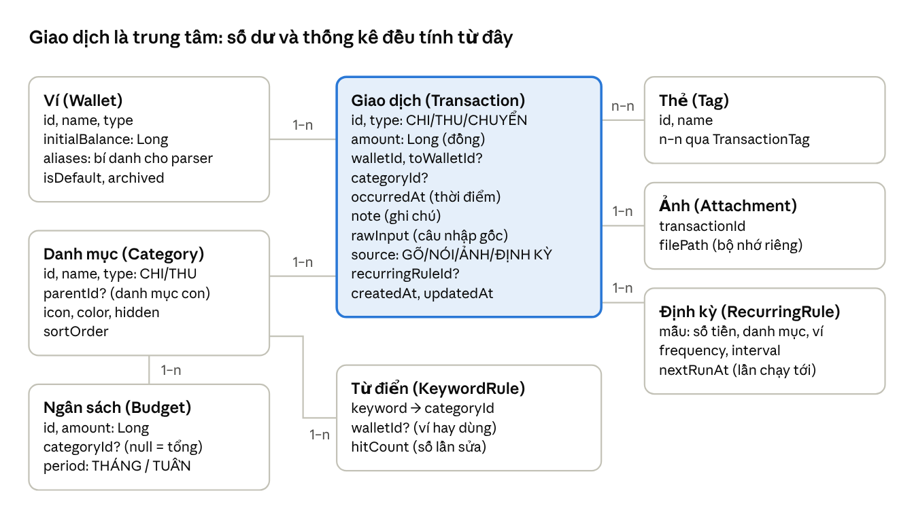
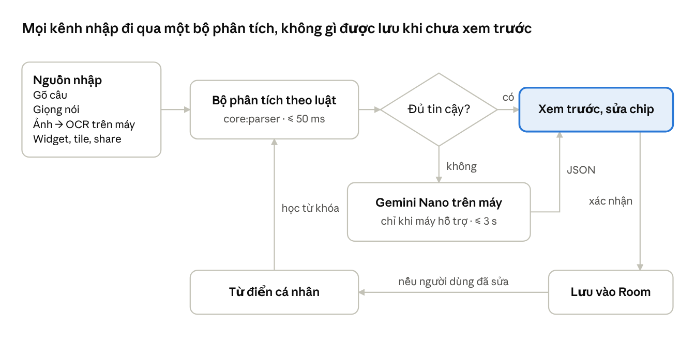
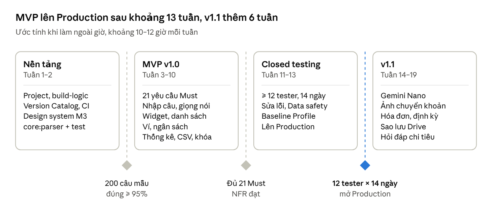

Đặc tả yêu cầu phần mềm – Sổ chi tiêu nhập bằng ngôn ngữ tự nhiên
1. Phân tích thị trường
Nhập bằng AI không còn là điểm mới: các app lớn tại Việt Nam đã có giọng nói, quét hóa đơn và tự phân loại. Khoảng trống còn lại nằm ở tốc độ nhập, độ chính xác với cách nói tiền của người Việt, quyền riêng tư và sự gọn nhẹ.
| App | Cách nhập giao dịch | Đồng bộ ngân hàng | Mô hình giá (VND) | Điểm yếu chính |
|---|---|---|---|---|
| Money Lover | Nhập tay; thêm bằng Siri và giọng nói trên Apple Watch (AI phân loại); quét hóa đơn, quét nhiều hóa đơn một lần | Có, gói Ví liên kết riêng 49.000/tháng hoặc 449.000/năm | Premium trọn đời 599.000; nhiều ví, ngân sách theo danh mục, xuất Google Sheets và bỏ quảng cáo đều nằm trong Premium | Tính năng cơ bản bị khóa sau Premium; nhập tay dễ bỏ cuộc sau vài tuần |
| Sổ Thu Chi MISA | Nhập tay, chat, giọng nói, chụp hóa đơn; AI phân loại; trợ lý tài chính AI | Có liên kết ngân hàng và nhập sao kê | Premium 49.000/tháng, 215.000/năm, 799.000 trọn đời | Phạm vi rất rộng (vàng, ngoại tệ, thuế TNCN, bảo hiểm, thẻ tín dụng) nên app nhiều tầng menu, nặng cho người chỉ cần ghi chi tiêu |
| MoMo | Tự ghi nhận giao dịch qua MoMo, AI phân loại; giao dịch ngoài MoMo phải nhập tay | Chỉ giao dịch MoMo | Miễn phí | Chỉ hữu ích khi chi tiêu chủ yếu qua MoMo; không xuất Excel/PDF |
| Timo | Tự ghi nhận qua tài khoản Timo, chia tiền theo "hũ" | Chỉ tài khoản Timo | Miễn phí, bắt buộc có tài khoản Timo | Không gộp được nguồn tiền khác |
| Nhóm app chat/voice AI quốc tế (ChatBudget, TalkieMoney, Finny, Ledgy...) | Chat "18 on lunch", ghi âm, ảnh hóa đơn; hỏi đáp "tháng trước tiêu bao nhiêu cho ăn uống?" | Phần lớn không | Freemium, giới hạn lượt dùng AI (ví dụ SpendMind cho 10 lượt ghi âm miễn phí) | Đa số phân tích câu trên server nên không chạy offline; có thể ghi sai số tiền một cách "tự tin"; chủ yếu tiếng Anh và iOS |
Ba nhận định rút ra:
Đồng bộ ngân hàng là sân chơi của app lớn. Nó cần hợp tác với ngân hàng, thu phí riêng và hay phát sinh lỗi kết nối. App cá nhân không nên cạnh tranh ở mảng này.
App lớn đang phình to. MISA đã thêm vàng, thuế, bảo hiểm, thẻ tín dụng. Điều này để lại chỗ cho một app chỉ làm tốt một việc: ghi chi tiêu nhanh.
Lỗi lớn nhất của nhập bằng AI là sai mà không biết. Finny khuyến nghị app phải hiện bản xem trước để người dùng xác nhận trước khi lưu.
2. Điểm khác biệt của app
App định vị là "ghi một khoản chi trong 3 giây, hiểu tiếng Việt đời thường, dữ liệu không rời khỏi máy". App không cạnh tranh về độ đầy đủ tính năng với MISA hay Money Lover.
| # | Điểm khác biệt | Đối thủ hiện tại | Cách app làm |
|---|---|---|---|
| 1 | Hiểu cách nói tiền của người Việt | App quốc tế chủ yếu tiếng Anh; app Việt có AI nhưng phụ thuộc server | Bộ phân tích hiểu 45k, 80 nghìn, 1tr2, 2 củ, 5 lít, năm chục, cùng thời gian như hôm qua, sáng nay, thứ 2 tuần trước |
| 2 | Nhiều khoản trong một câu | Thường mỗi câu một giao dịch | sáng phở 45k, trưa cơm 35k, cafe 29k tạo 3 giao dịch |
| 3 | Chạy offline, riêng tư mặc định | Đa số app chat AI gửi câu lên server | Hai tầng: bộ phân tích theo luật chạy trên mọi máy, cộng Gemini Nano trên máy hỗ trợ. Gọi AI trên cloud chỉ khi người dùng bật |
| 4 | Luôn xem trước và sửa trước khi lưu | AI có thể ghi sai mà người dùng không biết | Mỗi trường được tách ra (số tiền, danh mục, ngày, ví) hiện thành một chip sửa bằng một chạm. App học từ những lần sửa, ví dụ cf luôn là Cà phê |
| 5 | Nhập từ mọi nơi, không cần mở app | Phải mở app, bấm nút thêm | Widget màn hình chính, ô Cài đặt nhanh, phím tắt app, giọng nói |
| 6 | Nhập từ ảnh chụp chuyển khoản | Đồng bộ ngân hàng thu phí riêng hoặc chỉ trong hệ sinh thái riêng (MoMo, Timo) | Chia sẻ ảnh màn hình "Chuyển khoản thành công" hoặc văn bản từ bất kỳ app ngân hàng nào vào app. OCR trên máy đọc số tiền, nội dung và thời gian. Không cần quyền SMS hay quyền đọc thông báo |
| 7 | Miễn phí những thứ đối thủ khóa | Nhiều ví, ngân sách theo danh mục, xuất dữ liệu, bỏ quảng cáo nằm trong Premium | Tất cả miễn phí, không quảng cáo, không bắt buộc tạo tài khoản |
| 8 | Hỏi đáp về chi tiêu (v1.1) | Có ở MISA và app quốc tế, chạy trên cloud | tháng này ăn uống hết bao nhiêu? được chuyển thành truy vấn trên database cục bộ |
| 9 | Giao diện hiện đại, đa màn hình | Giao diện theo phong cách cũ, ít tối ưu cho tablet | Material 3 Expressive, Dynamic Color, dark mode, bố cục list và chi tiết trên tablet, máy gập |
Không làm (có chủ đích): đồng bộ ngân hàng, đọc SMS hoặc thông báo (quyền bị Google Play hạn chế), vàng, chứng khoán, thuế, cho vay, bảo hiểm.
Các mục 3 đến 10 dưới đây là bản Android. Bản iOS dùng chung FR, mô hình dữ liệu và màn hình, phần khác nằm trong Đặc tả yêu cầu phần mềm – ChiNhanh iOS
3. Giới thiệu
Mục đích. Tài liệu này đặc tả yêu cầu cho app Android native ChiNhanh (tên tạm). Đây là app ghi chi tiêu cá nhân bằng câu tiếng Việt tự nhiên. Nó là căn cứ cho thiết kế, lập trình, kiểm thử và phát hành lên Google Play. Cấu trúc tài liệu theo tinh thần ISO/IEC/IEEE 29148, rút gọn cho dự án một người.
Mục tiêu dự án, theo thứ tự ưu tiên:
Luyện trọn bộ công nghệ Android hiện đại qua một sản phẩm thật.
Phát hành lên Google Play đúng quy trình (closed testing, chính sách, Data safety).
Kiếm tiền không phải mục tiêu của phiên bản 1.
Phạm vi. App cho phép ghi thu chi bằng câu tự nhiên, giọng nói, ảnh hóa đơn hoặc ảnh chụp chuyển khoản. Người dùng quản lý nhiều ví, đặt ngân sách theo danh mục, xem thống kê và sao lưu dữ liệu. Toàn bộ dữ liệu lưu trên thiết bị. Ngoài phạm vi: các mục trong "Không làm" ở phần 2, bản iOS và bản web.
Thuật ngữ
| Thuật ngữ | Ý nghĩa |
|---|---|
| Giao dịch | Một khoản chi, thu hoặc chuyển tiền giữa hai ví |
| Ví | Nơi chứa tiền: tiền mặt, tài khoản ngân hàng, ví điện tử. Chỉ là nhãn, không kết nối thật |
| Danh mục | Nhóm chi tiêu như Ăn uống, Di chuyển, Hóa đơn. Có thể có danh mục con |
| Ngân sách | Hạn mức chi cho một danh mục trong một kỳ (tuần hoặc tháng) |
| Câu nhập | Văn bản người dùng gõ hoặc nói, ví dụ phở 45k |
| Bộ phân tích | Thành phần chuyển câu nhập thành giao dịch nháp |
| Giao dịch nháp | Kết quả phân tích chưa lưu, chờ người dùng xác nhận |
| Gemini Nano | Mô hình AI của Google chạy trên thiết bị qua AICore, chỉ có trên một số máy |
| MVP | Phiên bản tối thiểu đầu tiên được phát hành |
| FR / NFR | Yêu cầu chức năng / yêu cầu phi chức năng |
Độ ưu tiên dùng trong tài liệu: Must (bắt buộc cho MVP), Should (nên có, v1.1), Could (sau này nếu có thời gian).
4. Mô tả tổng quan
Người dùng mục tiêu là người Việt đã từng thử app chi tiêu rồi bỏ vì nhập mệt. App chạy hoàn toàn trên thiết bị, không có server riêng.
Chân dung người dùng
| Chân dung | Đặc điểm | Nhu cầu chính |
|---|---|---|
| Người đi làm trẻ, 22–30 tuổi (chính) | Nhiều khoản nhỏ mỗi ngày, thanh toán chủ yếu bằng QR, hay quên ghi | Ghi trong vài giây từ widget; ghi từ ảnh chuyển khoản; biết tiền đi đâu cuối tháng |
| Người lo chi tiêu gia đình, 30–45 tuổi | Nhiều nguồn tiền (tiền mặt, thẻ, ví điện tử), có kế hoạch tháng | Ngân sách theo danh mục, cảnh báo vượt mức, giao dịch định kỳ, xuất CSV |
| Người coi trọng quyền riêng tư | Không muốn liên kết ngân hàng hay gửi dữ liệu lên cloud | Không cần tài khoản, dữ liệu chỉ trên máy, khóa bằng sinh trắc học |
Môi trường vận hành
Android 8.0 (API 26) trở lên.
targetSdkvàcompileSdk= 37 (nâng từ 36 theo yêu cầu của Compose BOM và AndroidX Core mới).Điện thoại, tablet, máy gập và chế độ cửa sổ desktop.
Ngôn ngữ: tiếng Việt (mặc định) và tiếng Anh. Tiền tệ mặc định là VND.
Gemini Nano chỉ có trên một số máy hỗ trợ AICore. Máy không hỗ trợ dùng bộ phân tích theo luật.
Ràng buộc
Một lập trình viên, làm ngoài giờ. Không có backend và không có chi phí vận hành, ngoài phí tài khoản Google Play 25 USD.
Tuân thủ chính sách Google Play: target API theo yêu cầu năm hiện tại, form Data safety, chính sách quyền riêng tư. Tài khoản cá nhân mới phải chạy closed testing với ít nhất 12 tester trong 14 ngày.
Không xin quyền nhạy cảm: SMS, đọc thông báo, danh bạ, vị trí.
Mọi tính năng cốt lõi phải chạy offline.
Giả định
Phần lớn người dùng không có Gemini Nano. Vì vậy bộ phân tích theo luật phải tự xử lý đúng các câu phổ biến.
Người muốn sao lưu có tài khoản Google và đồng ý cho app ghi vào vùng dữ liệu riêng của app trên Google Drive.
5. Yêu cầu chức năng
App có 36 yêu cầu chức năng chia thành 7 nhóm, trong đó 21 yêu cầu là Must cho MVP. Mọi kênh nhập (gõ, nói, ảnh, widget) đều đi qua cùng một bộ phân tích và cùng một bước xem trước.
5.1 Nhập bằng câu tự nhiên
| Mã | Yêu cầu | Ưu tiên | Tiêu chí chấp nhận |
|---|---|---|---|
| FR-01 | Ô nhập câu luôn hiển thị trên màn hình chính. Gõ đến đâu, giao dịch nháp hiện ra đến đó | Must | phở 45k cho ra: Chi, 45.000 đ, Ăn uống, hôm nay, ví mặc định. Nháp hiện trong vòng 300 ms |
| FR-02 | Nhận diện số tiền theo cách viết của người Việt | Must | Hiểu 45k, 45 nghìn, 45 ngàn, 45.000, 1tr2, 1,5tr, 2 triệu, 2 củ, 5 lít, năm chục. Đúng số tiền ≥ 95% trên bộ 200 câu mẫu |
| FR-03 | Nhận diện thời gian tương đối và tuyệt đối | Must | Hiểu hôm qua, hôm kia, sáng nay, tối qua, thứ 2 tuần trước, ngày 5, 5/10. Không có thông tin thời gian thì lấy thời điểm hiện tại |
| FR-04 | Tự phân loại danh mục từ từ khóa, dùng từ điển mặc định cộng từ điển cá nhân | Must | grab, xăng vào Di chuyển; điện, nước, net vào Hóa đơn. Không khớp từ nào thì vào Khác và chip danh mục được tô nổi |
| FR-05 | Nhận diện loại giao dịch: chi (mặc định), thu, chuyển giữa hai ví | Must | lương về 15tr là Thu. chuyển 2tr từ VCB sang tiền mặt là Chuyển, có đủ ví nguồn và ví đích |
| FR-06 | Nhận diện ví theo tên hoặc bí danh do người dùng đặt | Must | cafe 29k bằng momo ghi vào ví MoMo nếu người dùng đã tạo ví này |
| FR-07 | Tách nhiều giao dịch trong một câu | Must | sáng phở 45k, trưa cơm 35k và cafe 29k tạo 3 nháp, lưu một lần |
| FR-08 | Xem trước nháp dạng chip sửa được (số tiền, danh mục, ngày, ví, ghi chú), rồi mới lưu | Must | Không giao dịch nào được lưu khi chưa bấm Lưu. Chạm một chip mở bộ chọn tương ứng |
| FR-09 | Học từ những lần người dùng sửa | Should | Sửa danh mục của cùng một từ khóa 2 lần thì từ đó vào từ điển cá nhân. Người dùng xem và xóa được trong Cài đặt |
| FR-10 | Tầng 2: Gemini Nano trên máy khi bộ phân tích theo luật không chắc chắn | Should | Chỉ gọi khi máy hỗ trợ và độ tin cậy dưới ngưỡng. Kết quả trả về là JSON có cấu trúc. Quá 3 giây thì dùng kết quả theo luật |
| FR-11 | Tùy chọn AI trên cloud qua Firebase AI Logic, tắt mặc định | Could | Phải được người dùng bật rõ ràng. App nói rõ chỉ gửi câu nhập, không gửi lịch sử |
| FR-12 | Gợi ý tự hoàn thành từ lịch sử | Should | Gõ ph gợi ý phở 45k nếu đã ghi câu này ít nhất 3 lần |
5.2 Các kênh nhập khác
| Mã | Yêu cầu | Ưu tiên | Tiêu chí chấp nhận |
|---|---|---|---|
| FR-13 | Nhập bằng giọng nói tiếng Việt | Must | Văn bản nhận được điền vào ô nhập và đi qua FR-01 đến FR-08 |
| FR-14 | Widget màn hình chính | Must | Hiện tổng chi hôm nay và tháng này. Nút "+" mở hộp thoại nhập nhanh mà không mở toàn bộ app |
| FR-15 | Ô Cài đặt nhanh và phím tắt app | Should | Mở thẳng hộp thoại nhập nhanh |
| FR-16 | Nhận văn bản hoặc ảnh được chia sẻ từ app khác | Should | Ảnh màn hình "Chuyển khoản thành công" của app ngân hàng phổ biến cho ra nháp có số tiền, nội dung và thời gian. OCR chạy trên máy |
| FR-17 | Chụp hóa đơn và đính kèm ảnh vào giao dịch | Should | Lấy được dòng tổng tiền. Ảnh lưu trong bộ nhớ riêng của app |
5.3 Quản lý giao dịch
| Mã | Yêu cầu | Ưu tiên | Tiêu chí chấp nhận |
|---|---|---|---|
| FR-18 | Danh sách giao dịch nhóm theo ngày, có tổng từng ngày | Must | Cuộn mượt với 10.000 giao dịch, nạp theo trang |
| FR-19 | Thêm, sửa, xóa bằng form thông thường | Must | Chạm vào một giao dịch mở màn hình sửa. Xóa có Hoàn tác trong 5 giây |
| FR-20 | Tìm kiếm toàn văn và lọc theo ngày, danh mục, ví, loại | Must | Tìm phở ra mọi giao dịch có chữ "phở" trong ghi chú hoặc câu gốc |
| FR-21 | Giao dịch định kỳ (tiền nhà, internet, gói đăng ký) | Should | Tự tạo giao dịch đúng ngày, kể cả khi app không mở |
| FR-22 | Thẻ (tag) cho giao dịch, ví dụ #ĐàLạt2026 | Could | Lọc và thống kê được theo thẻ |
5.4 Ví, danh mục, ngân sách
| Mã | Yêu cầu | Ưu tiên | Tiêu chí chấp nhận |
|---|---|---|---|
| FR-23 | Tạo, sửa, lưu trữ ví. Mỗi ví có số dư ban đầu và bí danh | Must | Số dư hiện tại = số dư ban đầu + thu − chi ± chuyển |
| FR-24 | Bộ danh mục tiếng Việt mặc định, có icon, màu và danh mục con 1 cấp | Must | Khoảng 15 danh mục chi và 5 danh mục thu. Ẩn được, xóa được khi không còn giao dịch |
| FR-25 | Ngân sách theo tháng cho từng danh mục và cho tổng chi | Must | Thanh tiến độ đổi màu ở 80% và 100% |
| FR-26 | Thông báo khi sắp vượt ngân sách | Should | Báo một lần khi đạt 80% và một lần khi đạt 100% mỗi kỳ |
5.5 Thống kê
| Mã | Yêu cầu | Ưu tiên | Tiêu chí chấp nhận |
|---|---|---|---|
| FR-27 | Tổng quan theo tuần, tháng hoặc năm: thu, chi, chênh lệch; biểu đồ chi theo danh mục và theo ngày; chọn nhanh một tháng bất kỳ | Must | Chạm một danh mục trên biểu đồ mở danh sách giao dịch của danh mục đó. Tới một tháng bất kỳ trong 2 năm gần nhất chỉ cần tối đa 3 lần chạm |
| FR-28 | So sánh với tháng trước theo từng danh mục | Should | Hiện mức tăng giảm theo % và theo số tiền |
| FR-29 | Hỏi đáp về chi tiêu bằng câu tự nhiên, chạy trên dữ liệu cục bộ | Should | tháng này ăn uống hết bao nhiêu? trả về đúng con số và link tới danh sách giao dịch |
5.6 Dữ liệu và bảo mật
| Mã | Yêu cầu | Ưu tiên | Tiêu chí chấp nhận |
|---|---|---|---|
| FR-30 | Xuất CSV theo khoảng ngày | Must | Mở đúng tiếng Việt trong Excel (UTF-8 có BOM). Người dùng chọn nơi lưu |
| FR-31 | Sao lưu và khôi phục qua Google Drive, hoặc ra file | Should | Sao lưu tự động hằng tuần khi bật. Khôi phục trên máy mới ra đúng số giao dịch và số dư |
| FR-32 | Khóa app bằng sinh trắc học hoặc khóa màn hình | Must | Yêu cầu mở khóa khi quay lại app sau thời gian người dùng chọn |
| FR-33 | Ẩn nội dung app trong màn hình đa nhiệm khi đã bật khóa | Should | Ảnh xem trước trong Recents không lộ số tiền |
5.7 Khởi đầu và cài đặt
| Mã | Yêu cầu | Ưu tiên | Tiêu chí chấp nhận |
|---|---|---|---|
| FR-34 | Onboarding tối đa 3 bước, không bắt đăng nhập | Must | Tạo ví đầu tiên, nhập số dư, thử một câu mẫu. Ghi được giao dịch đầu tiên trong vòng 60 giây từ lúc mở app |
| FR-35 | Cài đặt ngôn ngữ riêng cho app, giao diện sáng/tối, Dynamic Color, ngày bắt đầu tháng, ví mặc định | Must | Đặt ngày bắt đầu tháng là 25 thì thống kê tính từ ngày 25 đến ngày 24 tháng sau |
| FR-36 | Nhắc ghi chép hằng ngày vào giờ người dùng chọn | Should | Chỉ nhắc nếu hôm đó chưa ghi giao dịch nào |
6. Yêu cầu phi chức năng
Mỗi yêu cầu phi chức năng đều có cách đo cụ thể. App được xem là đạt khi mọi mục đạt trước khi lên production.
| Mã | Nhóm | Yêu cầu | Cách đo |
|---|---|---|---|
| NFR-01 | Hiệu năng | Khởi động lạnh ≤ 1 giây trên máy tầm trung | Macrobenchmark StartupTimingMetric, có Baseline Profile |
| NFR-02 | Hiệu năng | Bộ phân tích theo luật xử lý một câu ≤ 50 ms | Microbenchmark trên bộ 200 câu mẫu |
| NFR-03 | Hiệu năng | Cuộn danh sách 10.000 giao dịch không giật | FrameTimingMetric: khung hình giật dưới 1% |
| NFR-04 | Kích thước | Dung lượng tải về từ Play ≤ 20 MB | Báo cáo kích thước trong Play Console |
| NFR-05 | Ổn định | Người dùng không gặp crash ≥ 99,5%. Tỷ lệ crash và ANR thấp hơn ngưỡng "hành vi xấu" của Android vitals | Crashlytics và Android vitals |
| NFR-06 | Toàn vẹn dữ liệu | Số tiền lưu bằng số nguyên Long (đơn vị đồng), không dùng Double. Mọi migration của Room đều có test | Unit test và MigrationTestHelper |
| NFR-07 | Bảo mật | Dữ liệu nằm trong vùng riêng của app. File sao lưu được mã hóa AES-256-GCM, khóa sinh từ mật khẩu sao lưu bằng PBKDF2-HMAC-SHA256 (javax.crypto), theo định dạng dùng chung với bản iOS. Tắt auto backup của hệ thống cho database | Kiểm tra file sao lưu không đọc được khi thiếu mật khẩu |
| NFR-08 | Quyền riêng tư | Không SDK quảng cáo, không bắt tạo tài khoản. Báo cáo crash không chứa nội dung giao dịch và tắt được | Rà soát log trước khi phát hành; form Data safety khớp với thực tế |
| NFR-09 | Quyền hệ thống | Chỉ xin quyền thông báo, sinh trắc học và micro, đúng lúc cần dùng | Kiểm tra manifest đã merge |
| NFR-10 | Offline | 100% yêu cầu Must hoạt động khi không có mạng | Test thủ công ở chế độ máy bay |
| NFR-11 | Khả năng truy cập | TalkBack đọc được mọi phần tử. Vùng chạm ≥ 48 dp. Không vỡ bố cục ở cỡ chữ 200%. Tương phản đạt WCAG AA | Accessibility Scanner và Compose UI test |
| NFR-12 | Đa ngôn ngữ | Không có chuỗi hard-code. Tiếng Việt và tiếng Anh. Tiền định dạng theo locale (45.000 ₫) | Lint HardcodedText, screenshot test cho cả hai ngôn ngữ |
| NFR-13 | Tương thích | API 26 trở lên, edge-to-edge, predictive back. Bố cục thích ứng ở mốc 600 dp và 840 dp. Xoay màn hình không mất trạng thái | Test trên emulator điện thoại, tablet và máy gập |
| NFR-14 | Bảo trì | Độ phủ unit test ≥ 80% cho module parser và domain. CI chạy lint, test và build trên mỗi pull request | Báo cáo Kover trong CI |
| NFR-15 | Pin | Không chạy nền ngoài WorkManager, không dùng foreground service | Battery Historian hoặc Power Profiler cho thấy không có wake lock bất thường |
7. Mô hình dữ liệu
Dữ liệu gồm 8 thực thể Room xoay quanh bảng Giao dịch. Số dư ví và các con số thống kê không lưu riêng mà luôn tính từ giao dịch, nên không bao giờ bị lệch nhau.

Bảng ảo FTS4 trên note và rawInput phục vụ tìm kiếm (FR-20). Lưu lại rawInput giúp phân tích lại dữ liệu cũ mỗi khi bộ phân tích được cải tiến.
8. Màn hình và luồng chính
App có 4 tab chính: Trang chủ, Giao dịch, Ngân sách, Thống kê. Thanh điều hướng tự đổi từ bottom bar trên điện thoại sang navigation rail trên tablet. Cài đặt mở từ thanh trên cùng.
| Màn hình | Nội dung chính | Yêu cầu |
|---|---|---|
| Onboarding | 3 bước: tạo ví đầu tiên, nhập số dư, thử một câu mẫu | FR-34 |
| Trang chủ (tab) | Ô nhập câu và nút micro, tổng chi hôm nay và tháng này, ngân sách sắp vượt, giao dịch gần đây | FR-01 đến FR-08, FR-12, FR-13 |
| Hộp thoại nhập nhanh | Activity dạng dialog, mở từ widget, tile, phím tắt hoặc khi nhận chia sẻ | FR-14 đến FR-16 |
| Giao dịch (tab) | Danh sách theo ngày, tìm kiếm, bộ lọc. Trên tablet hiện danh sách và chi tiết cạnh nhau | FR-18, FR-20, FR-22 |
| Chi tiết giao dịch | Form sửa, ảnh đính kèm, xóa có hoàn tác | FR-17, FR-19 |
| Ngân sách (tab) | Thanh tiến độ theo từng danh mục và tổng | FR-25, FR-26 |
| Thống kê (tab) | Biểu đồ theo danh mục và theo ngày, so sánh tháng trước, ô hỏi đáp | FR-27 đến FR-29 |
| Ví và danh mục | Quản lý ví, bí danh, danh mục, từ điển cá nhân | FR-09, FR-23, FR-24 |
| Giao dịch định kỳ | Danh sách và form quy tắc lặp lại | FR-21 |
| Cài đặt | Ngôn ngữ, giao diện, khóa app, sao lưu, xuất CSV, nhắc ghi chép, AI trên cloud | FR-11, FR-30 đến FR-33, FR-35, FR-36 |
| Màn hình khóa | BiometricPrompt khi mở app | FR-32 |
Luồng quan trọng nhất là nhập giao dịch:

Nếu máy không có Gemini Nano, hoặc Gemini quá 3 giây, nháp dùng kết quả theo luật và chip chưa chắc chắn được tô nổi để người dùng kiểm tra.
Wireframe của từng màn hình và bảng khác biệt Android/iOS: Wireframe
9. Phạm vi phát hành
MVP (v1.0) gồm 21 yêu cầu Must, dự kiến lên Production vào khoảng tuần 13. Phiên bản v1.1 thêm 13 yêu cầu Should, trong đó có Gemini Nano và nhập từ ảnh.

Sau v1.1 là 2 yêu cầu Could: FR-11 (AI trên cloud) và FR-22 (thẻ). Các mốc tuần là ước tính với giả định làm khoảng 10–12 giờ mỗi tuần. Gemini Nano được để sang v1.1 vì nó chỉ chạy trên một số máy, còn MVP phải chạy tốt trên mọi máy.
10. Ràng buộc kỹ thuật và tech stack
Mỗi công nghệ được chọn vì có một yêu cầu cụ thể cần đến nó. Cột cuối cho biết công nghệ cũ mà nó thay thế trong kinh nghiệm hiện tại của bạn.
| Tầng | Công nghệ | Dùng cho | Thay cho |
|---|---|---|---|
| Ngôn ngữ | Kotlin 2.x (K2), Coroutines, Flow | Toàn bộ | Callback, RxJava |
| UI | Jetpack Compose, Material 3 Expressive, Dynamic Color | Mọi màn hình | XML, View, DataBinding |
| Bố cục thích ứng | material3-adaptive, WindowSizeClass, NavigationSuiteScaffold, ListDetailPaneScaffold | NFR-13 | layout-sw600dp |
| Điều hướng | Navigation 3 | Điều hướng giữa các màn hình, list và chi tiết trên tablet | Fragment, nav graph XML |
| State | ViewModel, StateFlow, collectAsStateWithLifecycle, kiến trúc UDF | Mọi màn hình | LiveData |
| DI | Hilt (qua KSP) | Toàn bộ | Dagger 2 viết component thủ công |
| Database | Room (KSP), FTS4, Paging 3 | FR-18, FR-20, FR-23 đến FR-29 | SQLite thủ công, kapt |
| Cấu hình | DataStore | FR-35 | SharedPreferences |
| Chạy nền | WorkManager | FR-21, FR-26, FR-31, FR-36 | AlarmManager, JobScheduler |
| Widget | Jetpack Glance | FR-14 | RemoteViews |
| Lối tắt | TileService, ShortcutManagerCompat | FR-15 | |
| Giọng nói | SpeechRecognizer (vi-VN) | FR-13 | |
| OCR | ML Kit Text Recognition v2, ML Kit Document Scanner | FR-16, FR-17 | |
| AI trên máy | ML Kit GenAI Prompt API (Gemini Nano) | FR-10, FR-29 | |
| AI trên cloud | Firebase AI Logic | FR-11 | |
| Biểu đồ | Vico (Compose) cho biểu đồ cột; biểu đồ tròn tự vẽ bằng Canvas | FR-27, FR-28 | MPAndroidChart |
| Bảo mật | androidx.biometric, javax.crypto (AES-256-GCM, PBKDF2) | FR-32, FR-33, NFR-07 | |
| Sao lưu | Credential Manager, Google Identity AuthorizationClient, Drive API (appDataFolder) | FR-31 | Google Sign-In cũ (đã bị khai tử) |
| Serialization | kotlinx.serialization | File sao lưu, kết quả JSON từ Gemini | Gson |
| Build | Gradle Kotlin DSL, Version Catalog, convention plugins, AGP 9 (nếu plugin chưa tương thích thì dùng AGP 8.x cho MVP), KSP | Toàn bộ | Groovy, kapt |
| Chất lượng mã | Android Lint, Detekt, Spotless (ktlint) | NFR-14 | |
| Kiểm thử | JUnit, kotlinx-coroutines-test, Turbine, Fakes, Compose UI Test, Roborazzi, Robolectric | NFR-11 đến NFR-14 | Espresso, Mockito |
| Hiệu năng | Baseline Profile, Macrobenchmark, Microbenchmark, R8 | NFR-01 đến NFR-04 | |
| Giám sát | Firebase Crashlytics (tắt được) | NFR-05, NFR-08 | |
| CI/CD | GitHub Actions, Gradle Play Publisher | NFR-14, phát hành | Build và upload thủ công |
Cấu trúc module dự kiến: app, feature:{quickadd, transactions, budget, stats, settings}, core:{parser, model, data, database, datastore, designsystem, ui, testing}, build-logic. Module core:parser viết bằng Kotlin thuần, không phụ thuộc Android, để test nhanh và có thể dùng lại cho KMP sau này.
Nguồn
Giá và tính năng của đối thủ lấy từ các trang dưới đây, truy cập tháng 10/2026. Bài so sánh của MoMo và Finny do chính đối thủ viết, nên cần đọc với tinh thần thận trọng.